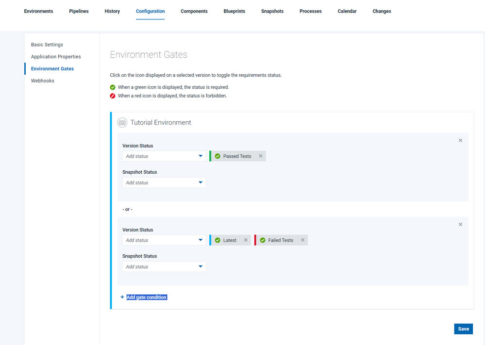

Environment gates
An environment gate is a requirement that must be met before component versions can be deployed to an environment. For example, a component version might need to pass certain tests or receive an approval.
Each environment gate can require a combination of version statuses. These statuses can be combined by using "and", "or" or "not" operators. When the component version has satisfied the statuses and operators, it can be deployed to the environment.
For example, the following figure shows the gate for an environment. The gate has three component version statuses: Passed Tests "or" both Latest "and" along with "Not" Failed Tests. In this case, a component version cannot be deployed to the environment unless it has the Passed Tests status or the Latest status and not Failed Tests.

To see the statuses on a component version, click and look in the Statuses field.